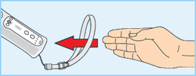
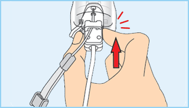
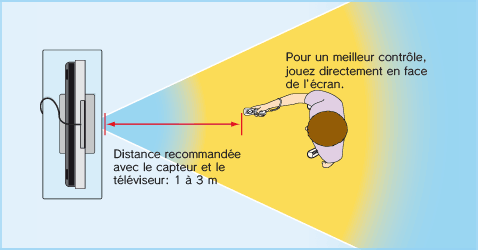

|
Précautions |
- Utilisez la dragonne!
Assurez-vous que tous les joueurs utilisent la dragonne (RVL-018 ou RVL-018A) et que les guides sont correctement ajustés. Lorsque plusieurs joueurs utilisent la même télécommande Wii, assurez-vous que chacun d’eux ajuste la dragonne correctement. Attacher la dragonne permet d’éviter de laisser tomber la télécommande Wii si vous la lâchez accidentellement pendant une partie.

- Tenez la télécommande Wii fermement et ne la lâchez pas!
Même lorsque vous utilisez la dragonne, ne lâchez jamais la télécommande Wii lorsque vous jouez. Par exemple, dans le jeu de bowling de Wii Sports™, vous devez relâcher  sur la télécommande Wii – ET PAS LA TELECOMMANDE Wii ELLE-MEME – pour lancer la boule. Si vos mains deviennent moites ou humides pour une raison quelconque, arrêtez de jouer et séchez-les avant de recommencer à jouer. Evitez tout mouvement excessivement ample, rapide ou vigoureux qui pourrait vous faire lâcher la télécommande Wii et casser la dragonne. Si cela se produit, vous risquez de blesser les personnes alentour et de casser la télécommande Wii ou d’autres objets. sur la télécommande Wii – ET PAS LA TELECOMMANDE Wii ELLE-MEME – pour lancer la boule. Si vos mains deviennent moites ou humides pour une raison quelconque, arrêtez de jouer et séchez-les avant de recommencer à jouer. Evitez tout mouvement excessivement ample, rapide ou vigoureux qui pourrait vous faire lâcher la télécommande Wii et casser la dragonne. Si cela se produit, vous risquez de blesser les personnes alentour et de casser la télécommande Wii ou d’autres objets.
Informations supplémentaires sur l'utilisation de la dragonne:
Il se peut que vous ayez à effectuer des mouvements secs ou rapides avec la télécommande Wii lorsque vous jouez à la console Wii. Veuillez utiliser la dragonne au cas où vous lâcheriez la télécommande Wii afin de réduire le risque d’endommager la télécommande Wii, les objets alentour ou de blesser des personnes. Pour obtenir de plus amples informations et garantir une utilisation sûre du produit, veuillez vous référer au mode d’emploi Wii – Installation de la console (section "Utiliser la télécommande Wii").
- Pour utiliser le Nunchuk™, passez le cordon de la dragonne dans le crochet du connecteur.
- Insérez la prise du Nunchuk dans le connecteur d'extension externe de la télécommande Wii.

- Assurez-vous que le cordon de la dragonne est correctement inséré dans le crochet du connecteur.
 |
|
 |
|
Précautions concernant le Wii Zapper |
|
 |
|
 |
Lorsque vous utilisez le Wii Zapper™, veuillez suivre les précautions d’emploi ci-dessous pour ne pas endommager le Wii Zapper, la console Wii ou d’autres objets environnants et pour ne pas blesser autrui.
Pour obtenir de plus amples informations et garantir une utilisation sûre du produit, veuillez vous référer au mode d’emploi du Wii Zapper. En cas de probléme, veuillez consulter le mode d'emploi de l'accessoire ou contacter le service consommateurs Nintendo.
|
ATTENTION |
- Lorsque vous jouez, il se peut que vous fassiez des mouvements amples avec les bras et les mains. Assurez-vous de laisser suffisamment d’espace autour de vous et tenez-vous à un métre minimum de la télévision. Lors de parties en multijoueur, assurez-vous également de disposer d’assez d’espace pour ne pas être gêné ni vous cogner contre les autres joueurs.
- Lorsque vous jouez, tenez fermement le Wii Zapper (et le Nunchuk si vous tenez ce dernier séparément) et ne le lâchez jamais. Si vous jetez le Wii Zapper ou que vous l’agitez de façon excessive et que vous le lâchez, la dragonne risque de céder.
- Ne tenez JAMAIS le Wii Zapper par la dragonne, ne le laissez pas pendre dans le vide ni autour de votre cou.
- Avant d’utiliser le Wii Zapper, assurez-vous que le cordon de la dragonne n’est pas endommagé. Dans le cas contraire, n’utilisez pas la télécommande Wii et remplacez le cordon de la dragonne.
- Assurez-vous que le cordon de la dragonne est correctement inséré dans le crochet du connecteur à la base de la prise du Nunchuk.
|
Précautions |
Lorsque vous utilisez le Nunchuk, veuillez suivre les précautions d’emploi ci-dessous pour ne pas endommager la manette, la console Wii ou d'autres objets environnants et pour ne pas blesser autrui.
Pour obtenir de plus amples informations et garantir une utilisation sûre du produit, veuillez vous référer au mode d'emploi de la manette. En cas de problème, veuillez consulter le mode d'emploi de l'accessoire ou contacter le service consommateurs Nintendo.
|
AVERTISSEMENTS |
- Ne convient pas aux enfants de moins de 36 mois – risque d’étranglement. Le câble du Nunchuk peut s’enrouler autour du cou.
- Tenez toujours fermement le Nunchuk et ne le faites pas tourner en le tenant par le câble. Vous pourriez endommager le Nunchuk ou les objets alentour, vous blesser ou blesser d’autres personnes.
- Ne touchez pas les connecteurs avec les doigts ou avec un objet métallique car il y a un risque de dégâts ou de blessure.
- Ne poussez pas le Stick directionnel d’un côté à l’autre violemment, car cela pourrait endommager le Nunchuk et affecter le jeu.
- Si le Nunchuk est sale, essuyez-le délicatement avec un chiffon doux. N’utilisez pas d’alcool ou de liquides inflammables, car cela pourrait endommager la surface de la manette.
- N’essayez pas de démonter, réparer ou modifier le Nunchuk vous-même, car vous risquez de l’endommager.
|
PRECAUTIONS CONCERNANT L'AIRE DE JEU |
Laissez suffisamment d’espace libre autour de vous!Vous aurez probablement à vous déplacer et à effectuer des mouvements assez amples pendant vos parties; assurez-vous donc de jouer suffisamment loin des meubles, des objets ou des personnes alentour pour éviter de les toucher accidentellement. Comme indiqué dans le mode d'emploi Wii, il vous est recommandé de vous tenir à un minimum d'un mètre de la télévision.


Ces informations sont également disponibles sur www.nintendo.com/healthsafety.
|
MODE 60 Hz (480i) |
Nombreux sont ceux qui ne connaissent pas la différence entre le 50 Hz et le 60 Hz, mais comme la plupart des téléviseurs modernes prennent en charge le 60 Hz, cela vaut la peine de vérifier si votre téléviseur est compatible. En quelques mots, les hertz (Hz) expriment le nombre d’images par seconde affichées sur votre écran.
En 50 Hz, l’écran affiche 25 images par seconde, contre 30 en 60 Hz. La différence peut paraître minime, mais l’image gagne indéniablement en qualité quand on passe de 25 à 30 images par seconde. En 60 Hz, l’image est plus lisse, moins scintillante et le jeu fonctionne à une vitesse optimale, ce qui vous permet de bénéficier d’une expérience de jeu unique.
La console Wii est en mode 50 Hz (576i) par défaut. Pour activer le mode 60 Hz (480i), sélectionnez TYPE DE TELEVISEUR dans les paramètres Wii. Cependant, certains téléviseurs, principalement les plus anciens, ne peuvent pas afficher les jeux en mode 60 Hz (480i) et certains joueurs peuvent donc avoir des difficultés à utiliser ce mode d’affichage sur leur téléviseur. Pour savoir si votre téléviseur est compatible avec le mode 60 Hz (480i), consultez son mode d’emploi ou contactez le fabricant.
Si, une fois le mode 60 Hz (480i) activé, votre écran n’affiche aucune image ou si l’image est déformée, il est probable que votre téléviseur ne prenne pas en charge le mode 60 Hz (480i). Pour revenir au réglage par défaut, appuyez sur le bouton RESET sur la console Wii tout en maintenant bas enfoncé sur  pour que la console Wii redémarre en mode 50 Hz (576i). Reportez-vous au mode d’emploi Wii – Chaînes et paramètres pour de plus amples informations sur ce réglage. De plus, lorsque vous branchez le câble RVB Wii (RVL-013) (vendu séparément) sur un téléviseur qui dispose d’une entrée RVB et d’une compatibilité PAL60, ou que vous branchez le câble composante AV Wii (RVL-011) (vendu séparément) sur un téléviseur qui dispose d’une entrée vidéo composante, vous pouvez profiter d’une image bien plus nette.
|
MODE EDTV/HDTV (480p)
Progressive Scan (balayage progressif) |
EDTV/HDTV (480p) est un mode d’affichage à balayage progressif qui permet d’obtenir la meilleure qualité d’image possible. Avec ce mode, l’image est plus précise et moins scintillante, et le jeu fonctionne à une vitesse optimale, ce qui vous permet de bénéficier d’une expérience de jeu unique. Chez Nintendo®, nous voulons que les joueurs puissent profiter de leurs jeux dans les meilleures conditions possibles.
Dans certains cas, ce mode ne peut pas être affiché, cela dépend de la combinaison téléviseur-câble que vous utilisez. Pour savoir si votre téléviseur est compatible avec l’affichage Progressive Scan nécessaire pour le mode EDTV/HDTV (480p), consultez son mode d’emploi ou contactez le fabricant pour plus de détails. Assurez-vous que vous utilisez le câble composante AV Wii (RVL-011) (vendu séparément) et paramétrez votre téléviseur pour le Progressive Scan lorsque vous choisissez ce mode.
La console Wii est en mode 50 Hz (576i) par défaut. Pour activer le mode EDTV/HDTV (480p), veuillez sélectionner TYPE DE TELEVISEUR dans les paramètres Wii. Reportez-vous au mode d’emploi Wii – Chaînes et paramètres pour de plus amples informations sur ce réglage.
|
|